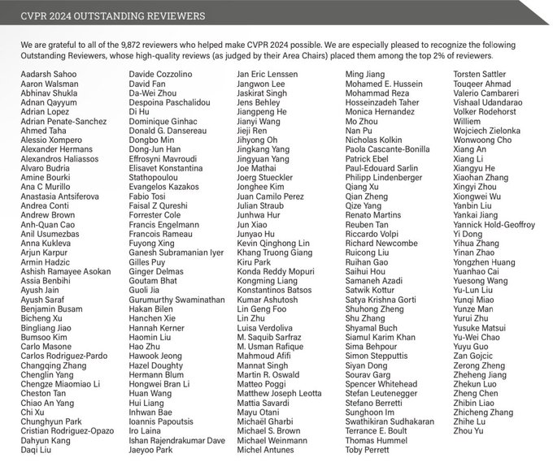
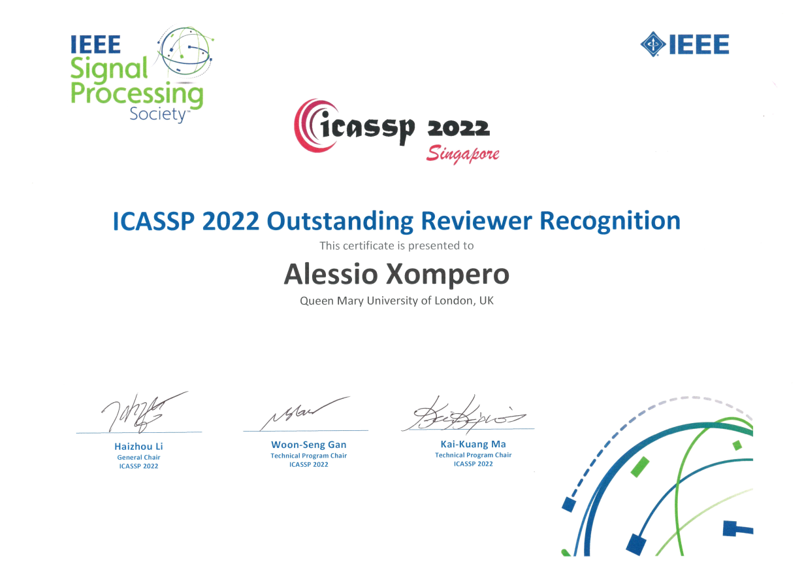
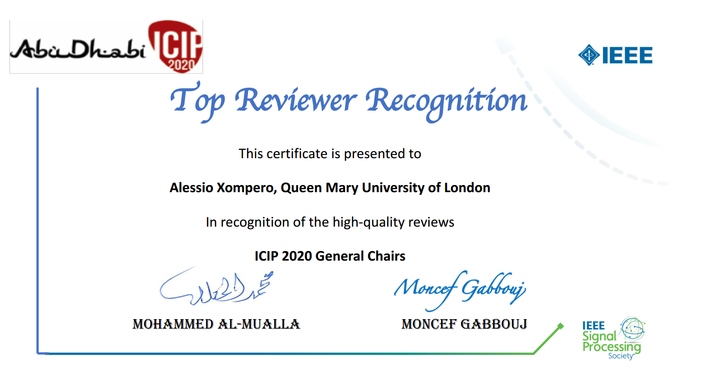
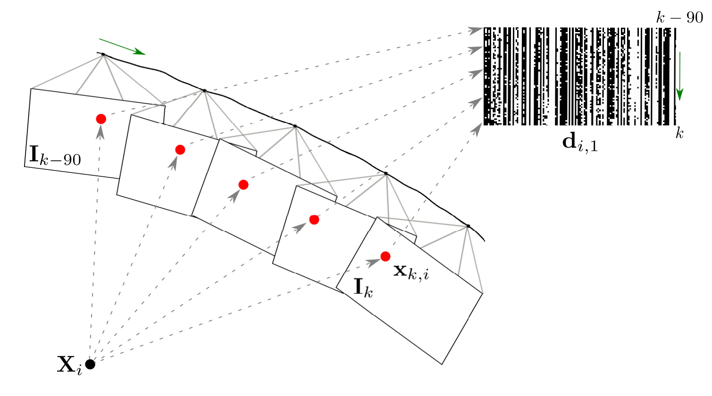
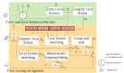
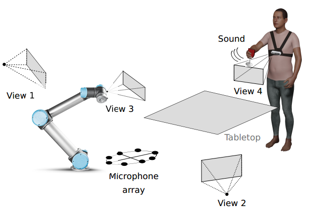
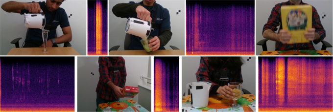
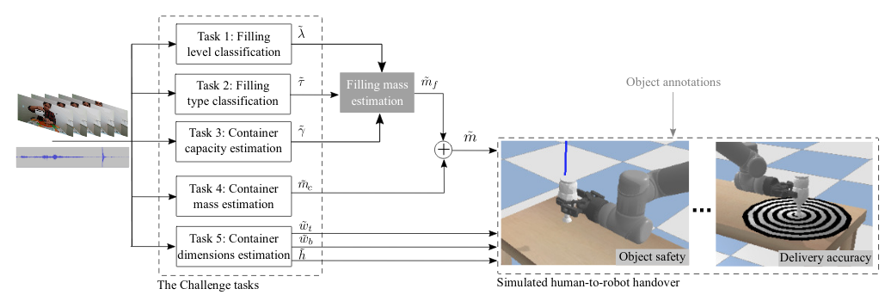
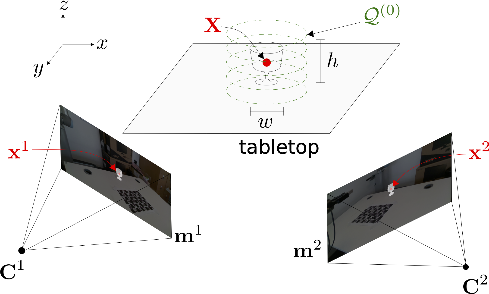

I am a Postdoctoral Research Assistant with the Centre for Intelligent Sensing and the School of Electronic Engineerging and Computer Science at Queen Mary University of London (QMUL), UK. I currently investigate machine learning models based on graph neural networks for explainable AI, specifically for the use-case of privacy protection in multimedia data (images, videos, and audio-visual data), under the project GraphNEx.
I obtained the Ph.D. in Electronic Engineering from Queen Mary University of London, UK, in September 2020, the Master Degree in Telecommunications Engineering and the Bachelor Degree in Electronic and Telecommunication Engineering from the University of Trento in March 2015 and February 2012, respectively. I was a Research Assistant and Postdoctoral Research Assistant in Queen Mary University of London and I investigated novel, robust, deployable multi-modal (audio-visual) models for human-to-robot handovers under the project "Collaborative Object Recognition, Shared Manipulation and Learning (CORSMAL)".
I am an IEEE Member and IEEE Signal Processing Society member, and I serve as a reviewer for international conferences and journals, including IEEE Transactions on Multimedia, IEEE Robotics and Automation Letters, IEEE Sensors Journal, IET Computer Vision, IEEE/CVF International Conference on Computer Vision and Pattern Recognition (CVPR), European Conference on Computer Vision (ECCV), IEEE International Conference on Image Processing (ICIP), IEEE International Conference on Acoustic, Speech, and Signal Processing (ICASSP), IEEE/RSJ International Conference on Intelligent Robots and Systems (IROS), IEEE International Conference on Pattern Recognition (ICPR), British Machine Vision Conference (BMVC), and ACM/IEEE International Conference on Human-Robot Interaction (HRI). I was awarded the Top Reviewer Recognition at IEEE ICIP 2020, and the Oustanding Reviewer Recognition at IEEE ICASSP 2022 and IEEE ICASSP 2023, and CVPR 2024.
Research interests
Perception for robotics | Image privacy | Computer Vision | Machine and Deep learning | Image and video processing | Multi-modal fusion
News
| 2024/05/23 | Recognised as outstanding reviewer for CVPR 2024 |
| 2024/01/20 | Attending the 2024 International Conference on Robotics and Automation (ICRA) in Yokohama, Japan, and co-organising the Human-to-Robot Handovers Sub-track within the Robotic Grasping and Manipulation Competition |
| 2024/04/16 | Presenting the project GraphNEx at the annual CHIST-ERA Projects Seminar 2024 |
| 2024/04/07 | Paper accepted as poster at XAI4CV Workshop at CVPR 2024 |
| 2024/02/07 | Reviewer for the European Conference on Computer Vision (ECCV) 2024 |
Awards
|  |

|
 |  |
|
Outstanding Reviewer Recognition IEEE/CVF CVPR 2024 (top 2% of 9,872 reviewers) |
Outstanding Reviewer Recognition IEEE ICASSP 2023 |
Outstanding Reviewer Recognition IEEE ICASSP 2022 (31 reviewers selected) |
Top Reviewer Recognition IEEE ICIP 2020 (top 3% of reviewers - 22 reviewers selected) |
Selected publications
|

A spatio-temporal multi-scale binary descriptor IEEE Transactions on Image Processing 2020 |
 Cross-Camera View-Overlap Recognition International Workshop on Smart Distributed Cameras at European Conference on Computer Vision, 2022 |

MORB: a multi-scale binary descriptor IEEE International Conference on Image Processing 2018 |
|
 The CORSMAL benchmark for the prediction of the properties of containers IEEE Access, vol. 10, 2022 |
  Audio-Visual Object Classification for Human-Robot Collaboration IEEE International Conference on Acoustic, Speech and Signal Processing 2022 |
 Multi-view shape estimation of transparent containers IEEE International Conference on Acoustic, Speech and Signal Processing 2020 |
Contact information
Dr. Alessio XomperoPostdoctoral Research Assistant
Centre for Intelligent Sensing
School of Electronic Engineering and Computer Science
Queen Mary University of London
Mile End Road, London E1 4NS, UK
a.xompero at qmul.ac.uk